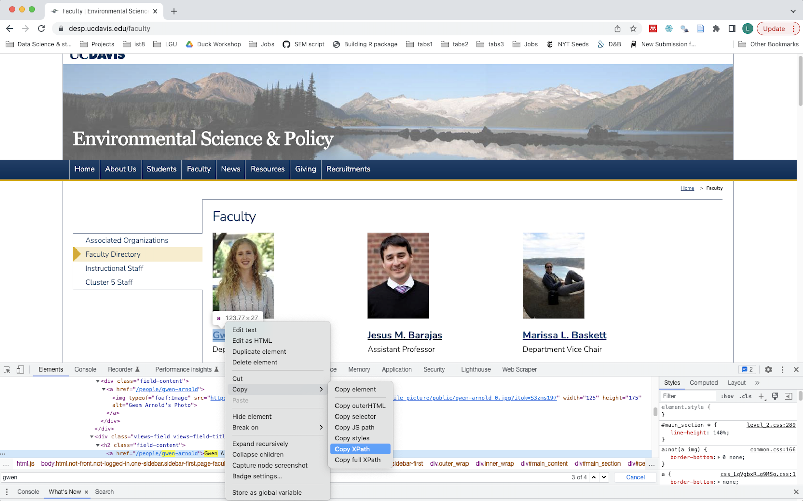
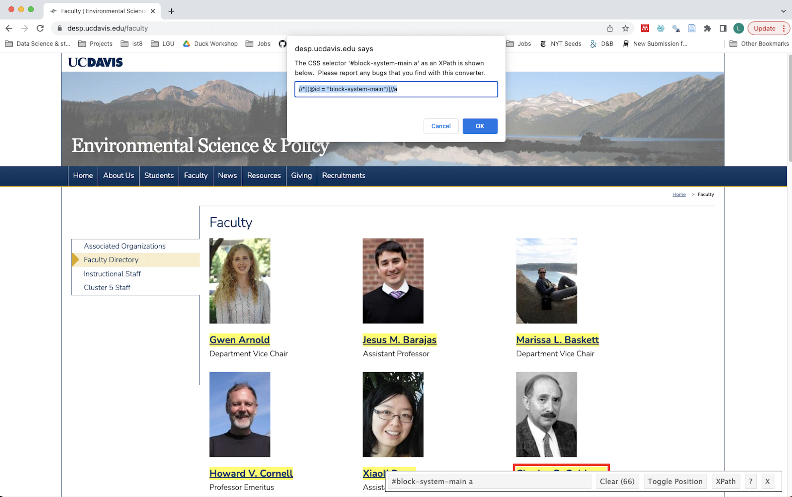

1 Scraping unstructured data
To scrape salaries from the public salary database, we first need to gather the names of the employees we want to collect salary data on. So let’s go to a UC Davis website and find a departmental page with faculty names. I’ll use the Environmental Science and Policy Department as an example.
We should also load in the following libraries that we’re going to use:
library(rvest)
library(xml2)
library(dplyr)1.1 Reading in a webpage
To read in the webpage, let’s assign the URL to an object, and use the read_html() function from rvest() to read the page.
url <- "https://desp.ucdavis.edu/faculty"
page <- read_html(url)But the page is currently stored as HTML, which is data we can readily work with in R.
page## {html_document}
## <html xmlns="http://www.w3.org/1999/xhtml" lang="en" xml:lang="en">
## [1] <head profile="http://www.w3.org/1999/xhtml/vocab">\n<meta content="text/ ...
## [2] <body class="html not-front not-logged-in one-sidebar sidebar-first page- ...So what do we want out of this? We want to find the ‘path’ that defines the location of the data we’re interested in extracting. But to know how to find that path we need to know a little bit about what’s in a web page. This is not my expert area, so I’ll point to a UC Davis DataLab resource on web-scraping that describes elements of webpages and more about HTML and XML.
For our purposes, it is important to know that HTML and XML – the language of webpages – use ‘tags’ to mark different parts of the webpage’s data. What we need to identify are the appropriate tags or paths to extract what we want. We can do this by identifying the ‘Xpaths’ – the path of tags that highlight particular parts of a page.
1.2 Identifying Xpaths
I don’t use Xpaths everyday, and so I tend to use two methods to help me identify the page’s structure.
- For very specific paths, I will open up Developer Tools on a Browser using
Cmd + Opt + I, then inspecting the elements of the page,Ctrl + Fto find the text of what I am looking for in the webpage. Once you find it you can right click > Copy > Xpath.
)
When I use this process for the first three names on the faculty page I find the following paths, each on unique their name:
- Gwen Arnold: //*[@id="block-system-main"]/div/div/div/div[1]/div[2]/h2/a
- Jesus Barajas: //*[@id="block-system-main"]/div/div/div/div[2]/div[2]/h2/a
- Marissa Baskett: //*[@id="block-system-main"]/div/div/div/div[3]/div[2]/h2/a
These are all too specific for trying to take all of the names with one path, but they do help us see the thing in common: All of these names are in the //*[@id="block-system-main"] path, which gives us a sense of what the more generic path might be. We can confirm with the second tool…
- The InspectorGadget Chrome extension lets you click on blocks of a webpage and identify their Xpaths. When you use this gadget, you can see the more generic path to grab all of the names: //*[(@id = "block-system-main")]//a

So, we can use this path to pull out the names from the webpage – turning structured data into data. We pull out the names with the xml_final_all() function, and then pipe that into the html_text() function, which read the text inside the XML nodeset.
faculty <- xml_find_all(page, '//*[(@id = "block-system-main")]//a') %>%
html_text()Now we have faculty names, but it is a bit messy, so we can start to clean it up next:
faculty## [1] "" "Gwen Arnold" ""
## [4] "Jesus M. Barajas" "" "Marissa L. Baskett"
## [7] "" "Howard V. Cornell" ""
## [10] "Xiaoli Dong" "" "Charles R. Goldman"
## [13] "" "Edwin Grosholz" ""
## [16] "Susan L. Handy" "" "Susan P. Harrison"
## [19] "" "Alan Hastings" ""
## [22] "Robert J. Hijmans" "" "Marcel Holyoak"
## [25] "" "Robert A. Johnston" ""
## [28] "John L. Largier" "" "Mark N. Lubell"
## [31] "" "Alan Meier" ""
## [34] "Frances C. Moore" "" "Steven G. Morgan"
## [37] "" "Joan M. Ogden" ""
## [40] "Ben Orlove" "" "James F. Quinn"
## [43] "" "Eliska Rejmankova" ""
## [46] "Peter J. Richerson" "" "Steven Sadro"
## [49] "" "James N. Sanchirico" ""
## [52] "Mark W. Schwartz" "" "Sy I. Schwartz"
## [55] "" "Tyler Scott" ""
## [58] "Andy Sih" "" "Daniel Sperling"
## [61] "" "Michael R. Springborn" ""
## [64] "Thomas P. Tomich" "" "Fernanda S. Valdovinos"